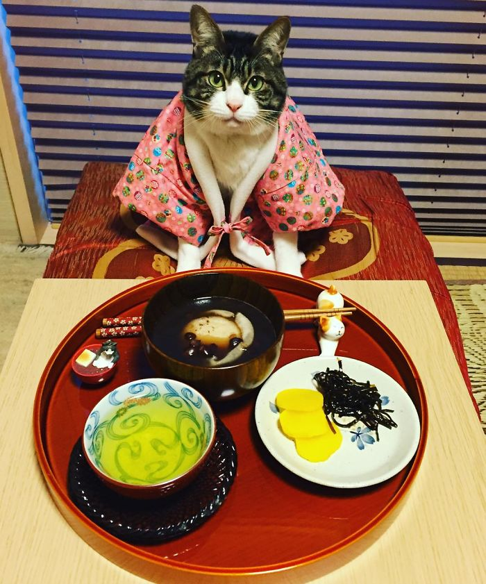
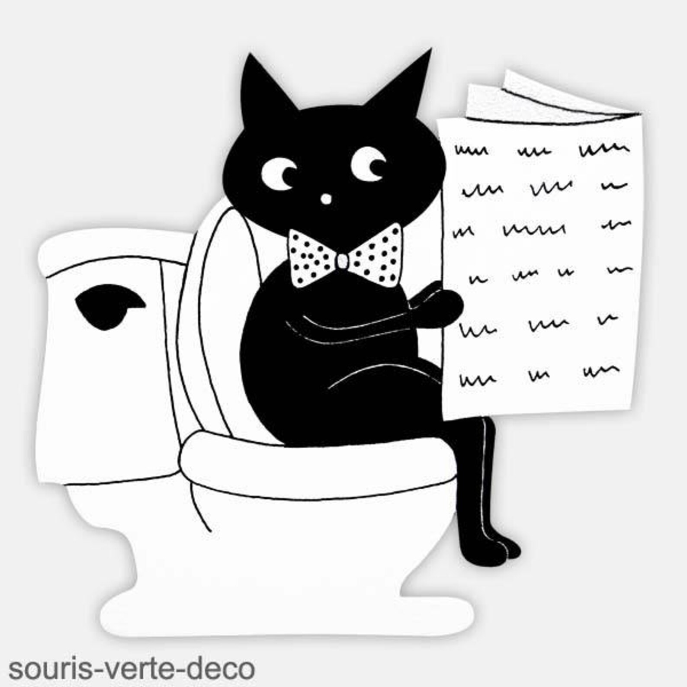

Basic steps to taking care of a cats health
Feeding
Every kitten is different, but your veterinarian can help you find the best food for its breed, size, activity level and age. He or she can also help you decide how much your kitten should eat to maintain the best possible health. Some considerations to make when feeding your kitten include:
-
Tourine:
Cats need tourine, which is an essential amino acid for eye and heart health. The best cat foods contain all the fundamental ingredients that your cat or kitten needs at every stage of their life.
-
Water:
Cats need fresh, clean water at least twice daily.
-
Treats:
While treats are great for teaching your cat tricks and training them, they should really only be 5-10 percent apart of their diet.
-
Visit the Vet:
Always consult with a veterinarian if your cat shows signs of diarrhea, vomiting, anorexia or lethargy. And make sure to take your cat to the vet annually for a checkup and vaccinations.
Spaying and Neutering
Female cats that still have their reproductive organs howl and become restless during heat, and are at a greater risk for mammary cancer. Male cats that are not neutered are aggressive and tend to spray urine. For these reasons, you should always opt to spay or neuter your cat unless you plan to enroll them in a breeding program.
If you adopt a kitten, wait at least six months before having the procedure performed. However, some veterinarians suggest having the surgery done earlier in life; talk with your veterinarian to see what they recommend.
Litter Box
If you plan on your cat being a strictly indoor cat, she will need a litter box in a private but easily accessible area. If you have multiple floors in your home, you should ideally have a litter box on each floor. Once you establish a place for your cat’s litter box, try not to move it around. Cats become accustomed to going in the bathroom in the same place each time, so if you move her box around, she may just go where her box used to be. If this happens, you would need to clean the area with a special c leaning solution in order to get rid of any traces of her urine or feces, otherwise you may have an ongoing problem.
Clean your cat’s box daily, as cats will refuse to use a messy litter box. Scoop solid chunks of litter and waste every day, and dump the entire box once a week. Clean it with a mild detergent, and then fill with fresh, clean litter. Do not buy litter with ammonia, deodorants or any other scents.